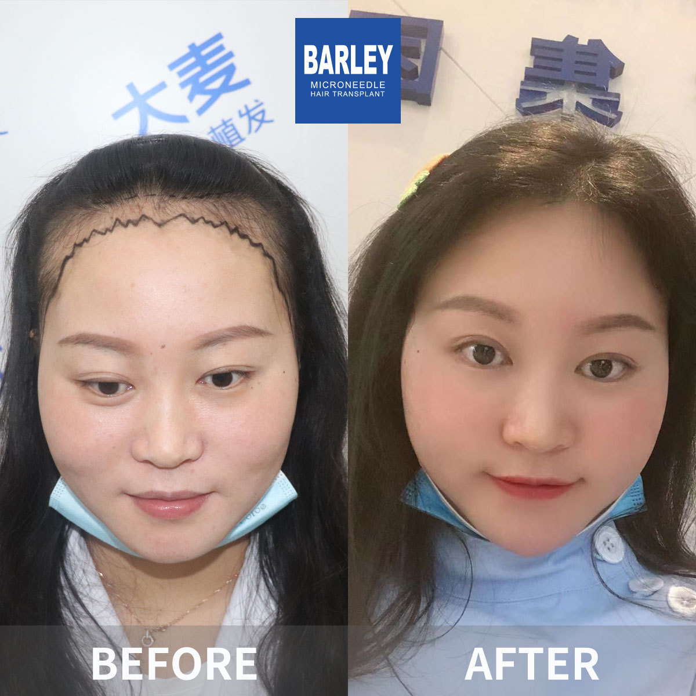

獲取關於頭髮修復程序、恢復、效果等所有問題的答案
獲取關於我們頭髮修復流程的關鍵細節
取決於移植的毛囊單位數量
大多數患者可以快速恢復辦公室工作
新頭髮開始明顯生長
完成頭髮修復
我們先進的技術確保高成功率
移植的頭髮持續終生
看看我們的患者實現的驚人轉變




與我們滿意患者的珍貴時刻

與陳醫生術後開心的患者

興奮的患者展示他們的新樣貌

成功手術後與我們的醫療團隊合影

與我們的醫生慶祝極好的效果

另一位滿意患者分享他們的喜悅

患者與我們的專家出院前
聽聽我們世界各地滿意患者的分享
"這個常見問題頁面回答了我關於植髮的所有問題！我之前非常緊張，但在這裡閱讀完所有內容後，我對手術感到完全準備好了！"
"我在Google上關於植髮恢復時間的所有搜尋都在這裡得到了答案！常見問題部分非常全面和清晰。這真的讓我放心！"
"關於疼痛、恢復時間和疤痕的問題正是我需要知道的！這個常見問題比我在網上找到的任何其他資源都好。謝謝！"
"我對毛囊存活率和費用有這麼多問題。這個常見問題涵蓋了我在Bing上問的所有問題，甚至更多！多虧了這裡的所有資訊，我的手術進展順利。"
"關於什麼時候看到最終效果的常見問題非常有幫助！我知道每一步可以期待什麼。這是任何考慮頭髮修復的人的最佳資源！"
"這個常見問題回答了我能想到的每個問題 - 甚至更多！我在進入手術時感到知情和自信。效果說明了一切！"
看看您的轉變發生在哪裡

舒適的術後空間

溫馨的入口

我們的最先進設施

在我們的尊貴休息室放鬆

無菌且先進

私密且專業
點擊複製聯絡資訊
15810155700
+86 13730143529
hairtransplant@qq.com